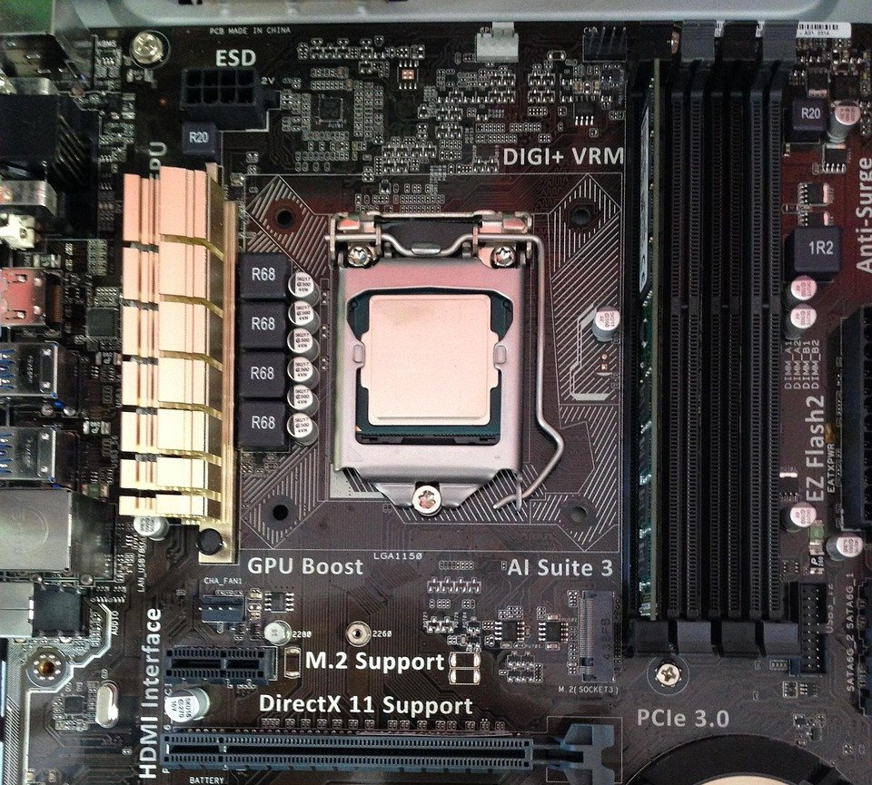
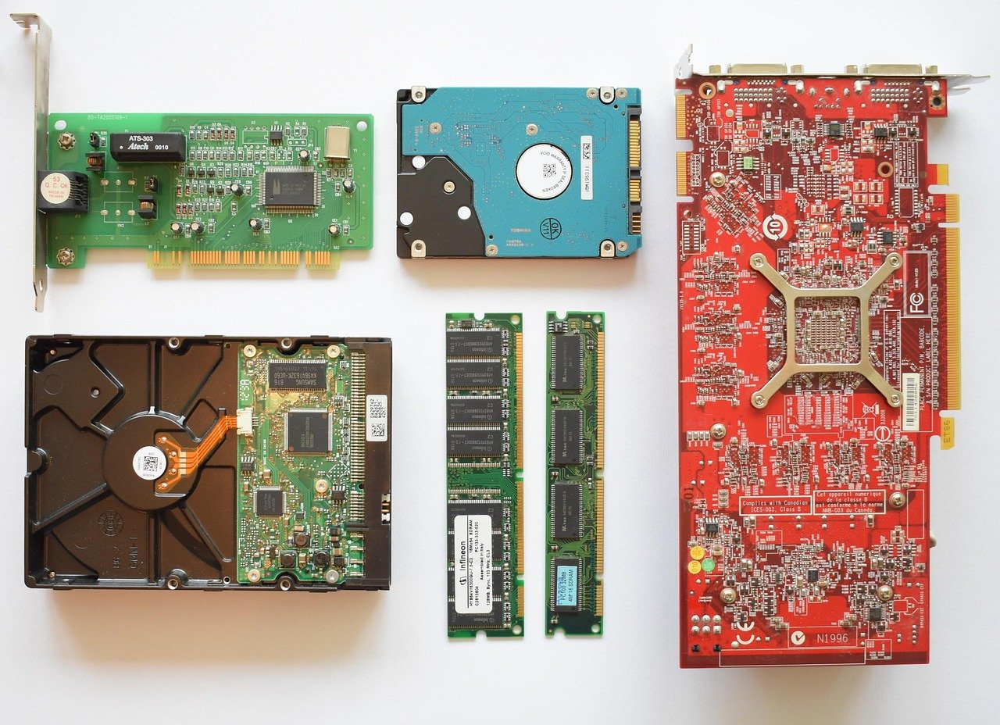
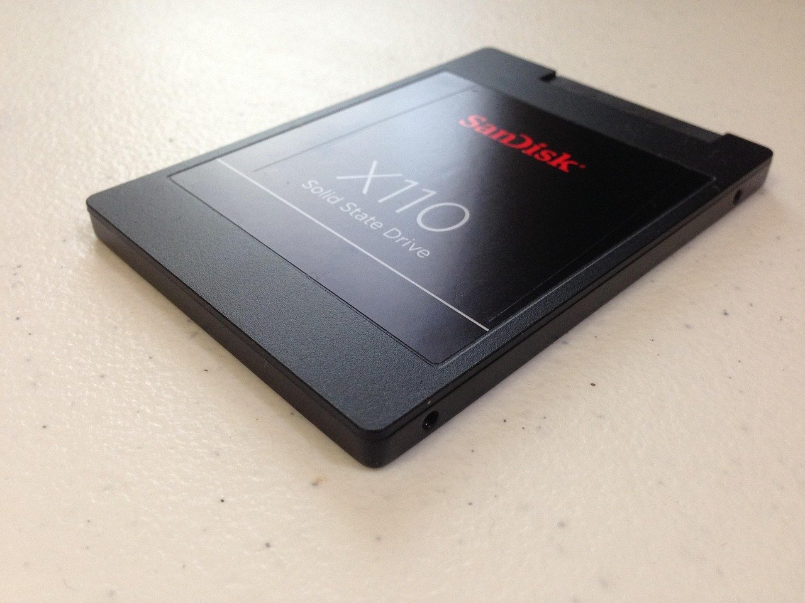
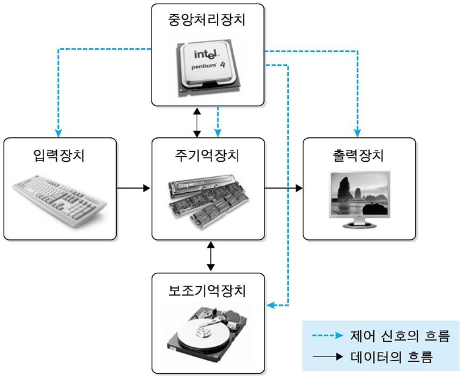
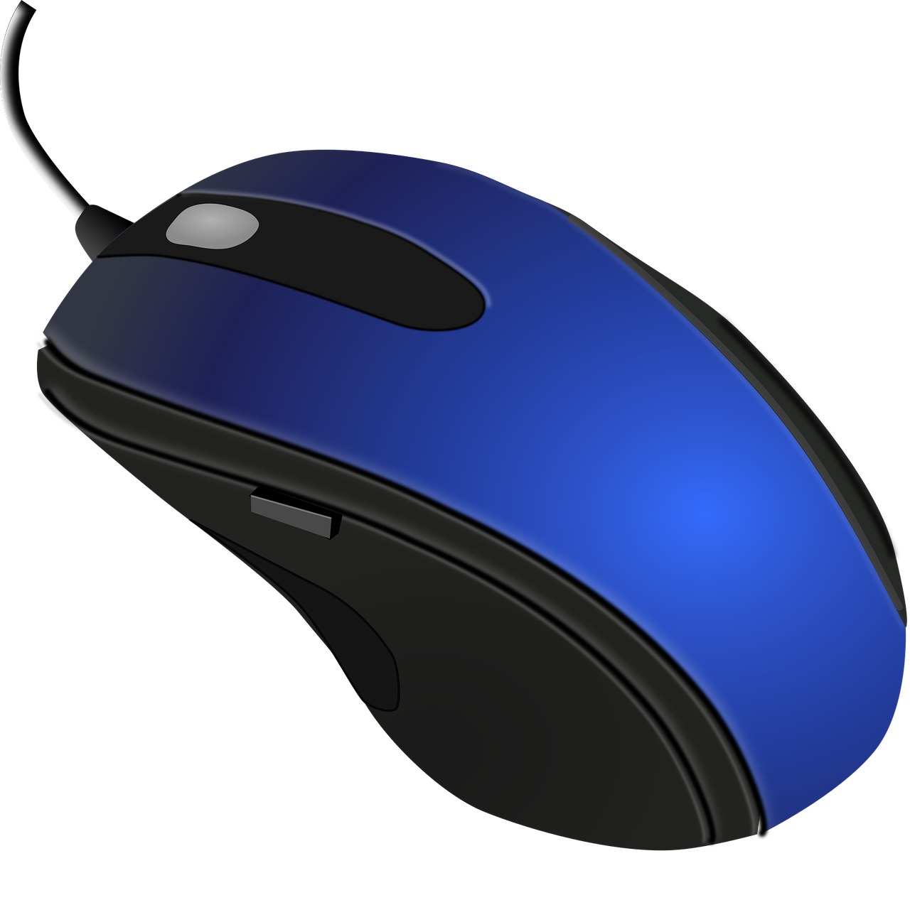
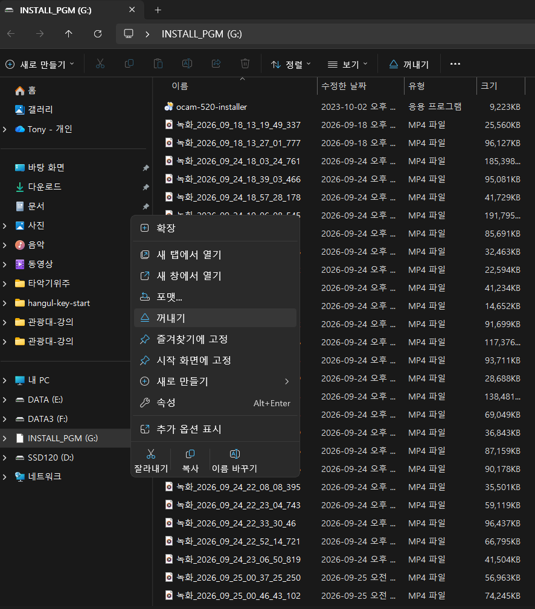

컴퓨터 기초 1차시: 컴퓨터 기본 구조 & Mouse 마스터ကွန်ပျူတာ အခြေခံ (၁) ကြိမ်မြောက်: ကွန်ပျူတာ ဖွဲ့စည်းပုံနှင့် Mouse အသုံးပြုနည်းTin Học Cơ Bản Bài 1: Cấu Trúc Máy Tính & Thành Thạo Mouse
LESSON OVERVIEW (1/18)
1. 수업 개요 및 목표: 컴퓨터와 친해지기၁။ သင်ခန်းစာ ရည်ရွယ်ချက်: ကွန်ပျူတာနှင့် ရင်းနှီးကျွမ်းဝင်ခြင်း1. Mục Tiêu Bài Học: Làm Quen Với Máy Tính
⏱️ 소요 시간: 50분 강의 및 실습 (10분 휴식)⏱️ ကြာချိန်: ၅၀ မိနစ် သင်ကြားမှုနှင့် လက်တွေ့ (၁၀ မိနစ် နားချိန်)⏱️ Thời lượng: 50 phút lý thuyết & thực hành (10 phút giải lao)
👥 대상: 미얀마, 베트남 유학생👥 သင်တန်းသား: မြန်မာ၊ ဗီယက်နမ် ကျောင်းသားများ👥 Đối tượng: Du học sinh Myanmar & Việt Nam
👨🏫 강사: 김해순 / 김광수👨🏫 သင်ကြားသူ: Kim Hae-soon / Kim Kwang-soo👨🏫 Giảng viên: Kim Hae-soon / Kim Kwang-soo
스마트폰을 터치하는 것과 컴퓨터 마우스를 조작하는 것은 전혀 다른 감각입니다. 오늘 수업에서는 컴퓨터를 망가뜨리지 않고 안심하고 다룰 수 있도록 컴퓨터의 물리적 구조와 안전한 종료법, 마우스의 5가지 조작법을 완전히 몸에 익힙니다.စမတ်ဖုန်းစခရင်ကို ထိတွေ့အသုံးပြုခြင်းနှင့် ကွန်ပျူတာ Mouse ကို ကိုင်တွယ်အသုံးပြုခြင်းသည် လုံးဝမတူညီပါ။ ယနေ့သင်ခန်းစာတွင် ကွန်ပျူတာ မပျက်စီးစေဘဲ စိတ်ချလက်ချ အသုံးပြုနိုင်ရန် ကွန်ပျူတာဖွဲ့စည်းပုံ၊ ဘေးကင်းစွာ ပိတ်နည်းနှင့် Mouse အသုံးပြုနည်း (၅) မျိုးကို လက်တွေ့လေ့ကျင့်ပါမည်။Thao tác chạm màn hình điện thoại rất khác với việc dùng chuột máy tính. Trong bài học hôm nay, các bạn sẽ hiểu rõ cấu trúc máy tính, cách tắt máy an toàn và thành thạo 5 thao tác chuột cơ bản để tự tin sử dụng máy tính làm việc.
STEP 1: CONCEPT
2. 하드웨어(Hardware)와 소프트웨어(Software)၂။ Hardware နှင့် Software ခွဲခြားသိမြင်ခြင်း2. Phân Biệt Phần Cứng (Hardware) & Phần Mềm (Software)
컴퓨터는 사람의 몸(하드웨어)과 생각·영혼(소프트웨어)이 결합된 것과 같습니다. 둘 중 하나라도 없으면 컴퓨터는 작동하지 않습니다.ကွန်ပျူတာသည် လူ၏ ခန္ဓာကိုယ် (Hardware) နှင့် စိတ်ဝိညာဉ်/အတွေး (Software) ပေါင်းစပ်ထားသကဲ့သို့ ဖြစ်ပါသည်။ တစ်ခုခုမရှိပါက ကွန်ပျူတာ အလုပ်မလုပ်နိုင်ပါ။Máy tính giống như sự kết hợp giữa cơ thể (Phần cứng) và tư duy, linh hồn (Phần mềm). Thiếu một trong hai, máy tính không thể hoạt động.
🦾 Hardware (H/W)
손으로 만질 수 있고 눈으로 볼 수 있는 기계 덩어리입니다. • 예: 본체, 모니터, 키보드, 마우스, 프린터, USBလက်ဖြင့် ထိတွေ့ကိုင်တွယ်နိုင်ပြီး မျက်စိဖြင့် မြင်နိုင်သော ပစ္စည်းများဖြစ်ပါသည်။ • ဥပမာ: ကွန်ပျူတာဘူး (Case)၊ Monitor၊ Keyboard၊ Mouse၊ USBLà các thiết bị máy móc cụ thể có thể nhìn thấy và chạm vào. • Ví dụ: Thân máy (Case), màn hình, bàn phím, chuột, máy in, USB.
🧠 Software (S/W)
기계 속에 담긴 생각, 규칙, 프로그램입니다. • 예: 윈도우 10 (운영체제), 아래아 한글 2020 (문서작성 프로그램), 인터넷 브라우저ကွန်ပျူတာအတွင်း ထည့်သွင်းထားသော စည်းမျဉ်းများ၊ ပရိုဂရမ်များ ဖြစ်ပါသည်။ • ဥပမာ: Windows 10 (OS)၊ Hangul 2020 (စာစီစာရိုက် ပရိုဂရမ်)၊ Internet ChromeLà các chương trình, quy tắc điều khiển máy tính. • Ví dụ: Hệ điều hành Windows 10, phần mềm soạn thảo Hangul 2020, trình duyệt web.
하드웨어는 딱딱한 옷일까요?▸
하드웨어의 '웨어'는 옷을 뜻하는 wear가 아니라, 공장에서 만든 물건을 뜻하는 ware입니다. 그 물건을 쌓아 두는 창고가 warehouse입니다. 꽁꽁 언 하드처럼 딱딱한(hard) 물건이 하드웨어(hardware)입니다.
3. 컴퓨터 겉모양과 본체 속 핵심 3총사၃။ ကွန်ပျူတာ အစိတ်အပိုင်းများနှင့် အတွင်းပစ္စည်း (၃) မျိုး3. Cấu Tạo Máy Tính & 3 Bộ Phận Cốt Lõi Bên Trong
컴퓨터 본체 안에는 매우 정밀한 부품들이 들어 있습니다. 요양보호 업무에서 책상과 서랍을 정리하듯 이해하면 아주 쉽습니다.ကွန်ပျူတာအတွင်း၌ အရေးကြီးသော ပစ္စည်းများ ပါရှိပါသည်။ ရုံးခန်းစားပွဲနှင့် ဗီဒိုများကို စီစဉ်သကဲ့သို့ နားလည်နိုင်ပါသည်။Bên trong thân máy có các linh kiện cốt lõi, bạn có thể liên tưởng dễ dàng như sắp xếp bàn làm việc và tủ hồ sơ.
[그림 1] 컴퓨터 내부 핵심 부품 3총사의 기능 비유[ပုံ ၁] ကွန်ပျူတာအတွင်း အဓိက အစိတ်အပိုင်း (၃) မျိုး၏ လုပ်ဆောင်ချက် နှိုင်းယှဉ်ချက်[Hình 1] So sánh chức năng 3 bộ phận cốt lõi của máy tính
💡 쉬운 정리: 책상(RAM)이 넓을수록 여러 서류를 동시에 펼쳐두고 일하기 편하고, 서랍장(SSD)이 커야 일지 파일을 수만 장 보관할 수 있습니다.💡 မှတ်သားဖွယ်: စားပွဲ (RAM) ကြီးလေလေ စာရွက်စာတမ်းများစွာကို တစ်ပြိုင်နက် ဖွင့်လှစ်ကြည့်ရှုနိုင်ပြီး၊ ဗီဒို (SSD) ကြီးလေလေ မှတ်တမ်းဖိုင်ပေါင်း ထောင်သောင်းချီ သိမ်းဆည်းနိုင်လေ ဖြစ်ပါသည်။💡 Ghi nhớ nhanh: Bàn làm việc (RAM) càng rộng càng mở được nhiều tài liệu cùng lúc; Tủ hồ sơ (SSD) càng lớn càng lưu trữ được nhiều tệp nhật ký.
메인보드는 왜 '엄마 보드'라고 할까요?▸
메인보드는 마더보드(Motherboard), 곧 '엄마 보드'라고도 합니다. 엄마가 식구를 품고 서로 이어 주듯, 메인보드는 CPU(두뇌), RAM(책상), SSD·HDD(서랍장)를 모두 품고 서로 이어 줍니다.
4. 컴퓨터 켜기와 안전하게 끄기 (Shutdown)၄။ ကွန်ပျူတာ ဖွင့်ခြင်းနှင့် ဘေးကင်းစွာ စနစ်တကျ ပိတ်ခြင်း4. Bật Máy & Tắt Máy Đúng Quy Trình An Toàn
1) 컴퓨터 켜기 (Power On)၁) ကွန်ပျူတာ ဖွင့်ခြင်း1) Bật nguồn máy tính
• 모니터 아래쪽의 전원 버튼을 누르고 불이 들어오는지 확인합니다. • 본체 앞면이나 윗면에 있는 가장 큰 동그란 버튼(전원 버튼)을 1번만 딸깍 누릅니다. (누르고 있지 마세요!)• Monitor အောက်ရှိ Power ခလုတ်ကို နှိပ်၍ မီးလင်းမလင်း စစ်ဆေးပါ။ • ကွန်ပျူတာဘူးရှိ အကြီးဆုံး အဝိုင်းခလုတ် (Power ခလုတ်) ကို တစ်ချက်သာ နှိပ်ပါ။ (ဖိမထားရပါ!)• Bật nút nguồn màn hình và kiểm tra đèn sáng. • Nhấn một lần dứt khoát vào nút tròn to nhất (Nút nguồn) trên thân máy. (Không nhấn giữ lâu!)
2) 안전하게 끄기 (Shutdown)၂) ဘေးကင်းစွာ စနစ်တကျ ပိတ်ခြင်း (Shutdown)2) Tắt máy tính an toàn (Shutdown)
컴퓨터를 끌 때는 절대로 본체의 전원 버튼을 그냥 누르면 안 됩니다! 작성 중이던 일지 파일이 모두 파괴될 수 있습니다. 반드시 아래 3단계를 지킵니다.ကွန်ပျူတာ ပိတ်သည့်အခါ ကွန်ပျူတာဘူးရှိ ခလုတ်ကို ဘယ်တော့မှ မနှိပ်ရပါ! ရေးလက်စ မှတ်တမ်းဖိုင်များ ပျက်စီးသွားနိုင်ပါသည်။ အောက်ပါ အဆင့် ၃ ဆင့်အတိုင်း လုပ်ဆောင်ပါ:Khi tắt máy, tuyệt đối không nhấn trực tiếp nút nguồn trên thân máy! Làm vậy sẽ khiến dữ liệu bị hỏng. Hãy luôn làm đúng 3 bước:
⚠️ 윈도우 안전 종료 3단계:
1단계: 화면 왼쪽 맨 아래의 [시작 창문 아이콘 (⊞)]을 마우스 왼쪽 버튼으로 클릭합니다.
2단계: 바로 위에 나타나는 [전원 버튼 (⏻)] 아이콘을 클릭합니다.
3단계: 메뉴 중에서 [시스템 종료 (Shut down)]를 클릭하고 화면이 완전히 꺼질 때까지 기다립니다.
⚠️ ကွန်ပျူတာ စနစ်တကျ ပိတ်နည်း (၃) ဆင့်:
အဆင့် ၁: စခရင်၏ ဘယ်ဘက်အောက်ခြေရှိ [Start ခလုတ် (⊞)] ကို Mouse ဖြင့် Click နှိပ်ပါ။
အဆင့် ၂: အပေါ်တွင် ပေါ်လာသော [Power ခလုတ် (⏻)] ကို Click နှိပ်ပါ။
အဆင့် ၃: ပေါ်လာသော စာရင်းထဲမှ [시스템 종료 (Shut down)] ကို နှိပ်ပြီး စခရင် မီးလုံးဝ ပိတ်သွားသည်အထိ စောင့်ပါ။
⚠️ 3 bước tắt máy an toàn trong Windows:
Bước 1: Nhấp chuột trái vào [Biểu tượng Windows (Start)] ở góc dưới cùng bên trái màn hình.
Bước 2: Nhấp vào [Biểu tượng Nguồn (Power)].
Bước 3: Chọn [시스템 종료 (Shut down)] và đợi cho màn hình tắt hoàn toàn.
STEP 4: MOUSE MASTERY
5. Mouse 잡는 법과 5대 핵심 조작법၅။ Mouse ကိုင်တွယ်နည်းနှင့် အဓိက လှုပ်ရှားမှု (၅) မျိုး5. Cách Cầm Mouse & 5 Thao Tác Mouse Cốt Lõi
마우스는 손에 힘을 빼고 달걀을 살포시 쥐듯 잡습니다. 검지(집게손가락)는 왼쪽 버튼에, 중지(가운데손가락)는 오른쪽 버튼에 올려놓습니다.Mouse ကို ကြက်ဥတစ်လုံးကို ဖွဖွလေး ကိုင်ထားသကဲ့သို့ လက်ကို ဖြေလျှော့ပြီး ကိုင်ပါ။ လက်ညှိုးကို ဘယ်ဘက်ခလုတ်တွင် တင်ထားပြီး၊ လက်ခလယ်ကို ညာဘက်ခလုတ်တွင် တင်ထားပါ။Cầm chuột nhẹ nhàng như đang ôm quả trứng. Ngón trỏ đặt lên nút chuột trái, ngón giữa đặt lên nút chuột phải.
1️⃣ 좌클릭 (Click)
왼쪽 버튼을 1번 '딸깍' 누르기. • 용도: 아이콘 선택, 글자 쓸 위치 클릭, 버튼 누르기.ဘယ်ဘက်ခလုတ်ကို တစ်ချက် နှိပ်ခြင်း။ • အသုံးပြုပုံ: ဖိုင်တစ်ခုကို ရွေးချယ်ခြင်း၊ စာရိုက်မည့်နေရာကို ထောက်ခြင်း။Nhấp nút trái 1 lần. • Dùng để: Chọn biểu tượng, đặt con trỏ gõ chữ, bấm nút lệnh.
2️⃣ 더블클릭 (Double Click)
왼쪽 버튼을 '딸깍딸깍' 빠르게 2번 누르기. • 용도: 프로그램 실행, 폴더 열기, 파일 열기.ဘယ်ဘက်ခလုတ်ကို မြန်မြန် (၂) ချက် နှိပ်ခြင်း။ • အသုံးပြုပုံ: ပရိုဂရမ် ဖွင့်လှစ်ခြင်း၊ ဖိုဒါနှင့် ဖိုင်များ ဖွင့်ခြင်း။Nhấp nút trái nhanh 2 lần liên tiếp. • Dùng để: Mở phần mềm, mở thư mục và tài liệu.
3️⃣ 우클릭 (Right Click)
오른쪽 버튼을 1번 '딸깍' 누르기. • 용도: 새 폴더 만들기, 이름 바꾸기, 복사/삭제 메뉴 열기.ညာဘက်ခလုတ်ကို တစ်ချက် နှိပ်ခြင်း။ • အသုံးပြုပုံ: ဖိုဒါအသစ် ပြုလုပ်ရန်၊ အမည်ပြောင်းရန်၊ Copy/Delete မီနူးများ ဖွင့်ခြင်း။Nhấp nút phải 1 lần. • Dùng để: Mở menu chức năng (Tạo thư mục mới, đổi tên, sao chép, xóa).
4️⃣ 드래그 앤 드롭 (Drag & Drop)
왼쪽 버튼을 누른 채로 끌고 가서 손 떼기. • 용도: 파일이나 폴더를 다른 방으로 옮기기, 글자 블록 지정.ဘယ်ဘက်ခလုတ်ကို ဖိထားပြီး ဆွဲရွှေ့ကာ လွှတ်ခြင်း။ • အသုံးပြုပုံ: ဖိုင်များကို အခြားဖိုဒါသို့ ရွှေ့ပြောင်းခြင်း၊ စာသားများကို ရွေးချယ်ခြင်း။Nhấn giữ chuột trái, kéo đến vị trí khác rồi thả ra. • Dùng để: Di chuyển tệp/thư mục, bôi đen đoạn văn bản.
5️⃣ 휠 스크롤 (Wheel Scroll)
가운데 바퀴를 앞뒤로 굴리기. • 용도: 긴 일지 문서나 인터넷 화면을 위아래로 내리고 올리기.အလယ်ဘီးကို ရှေ့နောက် လှိမ့်ခြင်း။ • အသုံးပြုပုံ: ရှည်လျားသော စာမျက်နှာများကို အပေါ်အောက် ရွှေ့ကြည့်ခြင်း။Lăn bánh xe ở giữa lên hoặc xuống. • Dùng để: Cuộn màn hình tài liệu hoặc trang web lên xuống.
컴퓨터 마우스는 왜 '쥐'라는 이름일까요?▸
영어로 큰 쥐는 rat, 작은 생쥐는 mouse입니다. 미키 마우스도 작은 생쥐입니다. 손바닥 밑에 쏙 들어가는 작은 몸통과 꼬리처럼 이어진 선이 생쥐를 닮아서 컴퓨터 마우스라는 이름이 붙었습니다.
6. 과제용 USB 메모리 꽂기와 안전하게 빼기၆။ အိမ်စာသိမ်းဆည်းမည့် USB Flash Drive အသုံးပြုနည်း6. Cách Cắm Và Rút USB Làm Bài Tập Về Nhà An Toàn
학생들에게 배포되는 USB는 수업 중 작성한 일지 파일을 집으로 가져가서 연습하고 다시 제출하는 중요한 보관함입니다.ကျောင်းသားများအား ပေးဝေထားသော USB သည် အတန်းထဲတွင် ရေးသားထားသော ဖိုင်များကို အိမ်သို့ ယူဆောင်လေ့ကျင့်ရန် အလွန်အရေးကြီးသော ပစ္စည်းဖြစ်ပါသည်။Chiếc USB được phát cho học viên là công cụ quan trọng để lưu các bài tập nhật ký mang về nhà thực hành và nộp lại.
단계 (Step)အဆင့်Bước
행동 지침 (Action Instruction)လိုက်နာရမည့် ညွှန်ကြားချက်Hướng dẫn chi tiết
1. USB 꽂기၁။ USB ထိုးခြင်း1. Cắm USB
• USB 단자의 위아래 방향을 확인하고 본체 USB 포트에 부드럽게 꽂습니다. • 화면 오른쪽 아래에 '새 드라이브 인식' 알림이 뜨는지 확인합니다.• USB ပေါက် အထက်အောက် အနေအထားကို စစ်ဆေး၍ ကွန်ပျူတာဘူးတွင် ညင်သာစွာ ထိုးသွင်းပါ။ • စခရင်၏ ညာဘက်အောက်ခြေတွင် USB ချိတ်ဆက်မိကြောင်း အသိပေးစာ တက်လာခြင်းကို စစ်ဆေးပါ။• Kiểm tra đúng chiều cắm của USB và cắm nhẹ nhàng vào cổng USB trên thân máy. • Nhìn góc dưới bên phải màn hình xem có thông báo nhận ổ đĩa mới hay không.
2. 안전하게 빼기၂။ ဘေးကင်းစွာ ဖြုတ်ခြင်း2. Rút ra an toàn
• [절대 그냥 뽑지 말기]: 화면 오른쪽 아래 작업표시줄에서 [하드웨어 안전하게 제거 (Safely Remove Hardware)] (USB 모양) 아이콘을 클릭합니다. • "안전하게 제거할 수 있습니다 (Safe to Remove Hardware)" 메시지가 뜨면 그때 손으로 뽑습니다.• [ဒီအတိုင်း ဆွဲမဖြုတ်ရပါ]: စခရင် ညာဘက်အောက် Taskbar မှ [하드웨어 안전하게 제거 (Safely Remove Hardware)] (USB ပုံ) အိုင်ကွန်ကို နှိပ်ပါ။ • "안전하게 제거할 수 있습니다 (Safe to Remove Hardware)" စာတန်း ပေါ်လာမှသာ လက်ဖြင့် ဆွဲဖြုတ်ပါ။• [Tuyệt đối không rút giật ngay]: Bấm vào biểu tượng [하드웨어 안전하게 제거 (Safely Remove Hardware)] (Hình USB) ở góc dưới bên phải màn hình. • Khi có thông báo "안전하게 제거할 수 있습니다 (Safe to Remove Hardware)" xuất hiện, lúc đó mới dùng tay rút USB ra.
USB는 왜 '꺼내기'를 하고 빼야 할까요?▸
컴퓨터는 USB에 파일을 쓰는 일을 조금 미뤘다가 할 때가 있어서, 그냥 뽑으면 파일이 깨질 수 있습니다. 탐색기에서 USB를 우클릭해 [꺼내기 (Eject)]를 누르면, 어떤 USB인지 이름을 보고 안전하게 뺄 수 있습니다. [이름 바꾸기 (Rename)]로 USB에 이름표를 붙여 두면 여러 개를 꽂아도 바로 구별됩니다.
7. 1차시 실습 점검 체크리스트 (스스로 해보기)၇။ (၁) ကြိမ်မြောက် လက်တွေ့ စစ်ဆေးချက် စာရင်း7. Bảng Kiểm Tra Thực Hành Bài 1 (Tự Đánh Giá)
오늘 배운 내용을 강사의 도움 없이 혼자 힘으로 수행할 수 있는지 체크해 봅니다.ယနေ့ သင်ကြားခဲ့သည်များကို ဆရာ၏ အကူအညီမပါဘဲ မိမိကိုယ်တိုင် ပြုလုပ်နိုင်ခြင်း ရှိမရှိ စစ်ဆေးပါ။Hãy tự kiểm tra xem bạn có thể tự mình thực hiện các thao tác dưới đây mà không cần trợ giúp không.
실습 확인 과제 (Tasks)လက်တွေ့ လုပ်ဆောင်ရမည့် အချက်များNhiệm vụ thực hành
성공 여부ပြီးမြောက်မှုKết quả
1. 컴퓨터 본체 전원을 켜고 바탕화면이 뜰 때까지 기다릴 수 있다.၁။ ကွန်ပျူတာ Power ခလုတ်ကို ဖွင့်ပြီး Desktop ပေါ်လာသည်အထိ စောင့်ဆိုင်းနိုင်ခြင်း။1. Biết bật nguồn thân máy và chờ đến khi màn hình chính xuất hiện.
☑ 통과 (Pass)
2. 바탕화면의 아이콘을 마우스로 '더블클릭'하여 프로그램을 열 수 있다.၂။ Desktop ပေါ်ရှိ အိုင်ကွန်ကို 'Double Click' နှိပ်၍ ပရိုဂရမ် ဖွင့်လှစ်နိုင်ခြင်း။2. Biết nhấp đúp (Double-click) chuột trái để mở một chương trình trên màn hình.
☑ 통과 (Pass)
3. 마우스 오른쪽 버튼을 눌러 바탕화면의 부가 메뉴를 띄울 수 있다.၃။ Mouse ညာဘက်ခလုတ် (Right Click) ကို နှိပ်၍ မီနူးများ ခေါ်ယူနိုင်ခြင်း။3. Biết nhấp chuột phải để mở menu tùy chọn.
☑ 통과 (Pass)
4. 과제용 USB를 꽂고, '하드웨어 안전하게 제거 (Safely Remove Hardware)'를 누른 후 뽑을 수 있다.၄။ USB ကို ပေါက်တွင် ထိုးသွင်းပြီး '하드웨어 안전하게 제거 (Safely Remove Hardware)' ပြုလုပ်၍ ဖြုတ်နိုင်ခြင်း။4. Biết cắm USB vào máy và dùng lệnh '하드웨어 안전하게 제거 (Safely Remove Hardware)' trước khi rút ra.
☑ 통과 (Pass)
5. [시작 (Start)] ➔ [전원 (Power)] ➔ [시스템 종료 (Shut down)]를 차례로 눌러 안전하게 컴퓨터를 끌 수 있다.၅။ [시작 (Start)] ➔ [전원 (Power)] ➔ [시스템 종료 (Shut down)] ကို နှိပ်၍ စနစ်တကျ ကွန်ပျူတာ ပိတ်နိုင်ခြင်း။5. Biết vào [시작 (Start)] ➔ [전원 (Power)] ➔ [시스템 종료 (Shut down)] để tắt máy an toàn.
하드웨어, 소프트웨어. 아마 여러 번 들어 본 말일 것입니다. 컴퓨터 이야기를 하면 꼭 나오는 말이니까요. 그런데 누가 "하드웨어가 무슨 뜻이에요?" 하고 물으면, 대답이 잘 나오지 않습니다. 많이 들어 봤는데 뜻은 잘 모르는 말. 오늘은 이 말을 우리가 이미 알고 있는 단어에서 시작해서, 천천히 풀어 보겠습니다.
먼저 '웨어'라는 소리를 들으면 무엇이 떠오르나요? 아마 옷 가게 간판일 것입니다. 스포츠웨어, 골프웨어, 아웃도어웨어, 홈웨어. 모두 옷입니다. 이때의 웨어는 영어 wear입니다. wear는 '입다'라는 뜻이고, 입는 옷을 가리키기도 합니다.
그러면 하드웨어는 '딱딱한 옷'일까요? 옛날 기사들이 입던 쇠 갑옷이 떠오릅니다. 그러면 소프트웨어는 '부드러운 옷', 잠옷일까요? 이상합니다. 컴퓨터와 갑옷, 컴퓨터와 잠옷은 아무 관계가 없습니다. 하드웨어라는 말이 어렵게 느껴졌던 까닭이 바로 여기에 있습니다. 귀로 듣고 옷(wear)을 떠올리니 뜻이 이어지지 않았던 것입니다.
비밀은 글자에 있습니다. 하드웨어는 hardwear가 아니라 hardware라고 씁니다. 귀로 들으면 똑같이 '웨어'이지만, 눈으로 보면 다른 단어입니다. 영어에는 이렇게 소리는 같고 뜻은 다른 단어가 많습니다. see(보다)와 sea(바다)처럼 말입니다. wear는 옷이고, ware는 전혀 다른 뜻입니다.
ware는 '공장에서 만든 물건'이라는 뜻입니다. 이 단어는 낯설어 보이지만, 사실 우리는 이미 만나 본 적이 있습니다. 코스트코 같은 창고형 매장에 가 본 적이 있나요? 천장까지 닿는 높은 선반에 상자가 가득 쌓여 있고, 큰 카트를 밀며 물건을 고릅니다. 가게라기보다 커다란 창고 같습니다. 이런 창고형 매장을 영어로 warehouse store, 또는 warehouse club이라고 합니다.
warehouse는 ware(물건)와 house(집)를 합친 말입니다. 물건이 사는 집, 곧 창고입니다. 공장에서 물건을 만들면 먼저 창고에 보관합니다. 이 창고가 warehouse입니다. 가게나 회사가 그 물건을 사서 보관하는 곳도 똑같이 창고, warehouse라고 합니다. 물건은 공장에서 창고로, 창고에서 가게로, 가게에서 우리 집으로 옮겨 갑니다. 이 길을 따라 움직이는 물건이 ware입니다. 이제 '웨어' 소리를 들으면 옷 대신 창고를 떠올려 보세요.
이번에는 앞에 붙은 hard를 봅시다. hard는 '딱딱하다', '단단하다'라는 뜻입니다. 이 말도 우리는 이미 알고 있습니다. 바로 아이스크림 '하드'입니다. 1960년대에는 길거리에서 "아이스케키~" 하고 외치며 얼음과자를 파는 장수가 있었습니다. 그 무렵 공장에서 위생적으로 만든 '삼강 하드'라는 막대 아이스크림이 나왔고, 그 뒤로 사람들은 막대 아이스크림을 '하드'라고 불렀습니다. 꽁꽁 얼어서 한 입 깨물면 이가 시릴 만큼 딱딱했습니다. 지금도 어르신들 가운데에는 막대 아이스크림을 하드라고 부르는 분을 만날 수 있습니다. 딱딱한 하드를 떠올리면 hard의 뜻은 잊어버리지 않습니다.
이제 두 조각을 붙여 봅시다. hard(딱딱한)와 ware(물건)가 만나면 hardware, '딱딱한 물건'입니다. 컴퓨터가 생기기 훨씬 전부터 영어에는 이 말이 있었습니다. 망치, 못, 자물쇠, 냄비처럼 쇠로 만든 딱딱한 물건을 hardware라고 불렀습니다. 이런 물건을 파는 가게를 hardware store라고 합니다. 한국어로 하면 철물점입니다.
컴퓨터가 생긴 뒤에는 컴퓨터의 기계 부분도 hardware라고 부르게 되었습니다. 본체, 모니터, 키보드, 마우스, USB를 손으로 만져 보세요. 단단하고 딱딱합니다. 떨어뜨리면 깨지거나 고장이 납니다. 손으로 만질 수 있고 눈으로 볼 수 있는 기계, 이것이 하드웨어입니다.
그러면 소프트웨어는 무엇일까요? soft는 '부드럽다'라는 뜻입니다. 아이스크림에도 짝이 있습니다. 딱딱한 하드가 있고, 콘 위에 빙글빙글 짜 주는 부드러운 소프트아이스크림이 있습니다. 컴퓨터에도 딱딱한 하드웨어의 짝으로 부드러운 소프트웨어가 있습니다. 소프트웨어는 손으로 만질 수 없는 물건입니다. 윈도우 10, 아래아 한글, 인터넷 브라우저 같은 프로그램이 소프트웨어입니다. 모양은 없지만, 기계에게 무엇을 어떻게 할지 알려 줍니다.
하드웨어와 소프트웨어는 사람의 몸과 생각과 같습니다. 몸만 있고 생각이 없으면 움직일 수 없습니다. 생각만 있고 몸이 없으면 일을 할 수 없습니다. 컴퓨터도 하드웨어와 소프트웨어가 함께 있어야 일을 합니다.
이제 하드웨어라는 말을 들으면 쇠 갑옷 대신 두 가지를 떠올려 보세요. 물건을 쌓아 두는 창고 warehouse, 그리고 꽁꽁 언 딱딱한 하드. 딱딱한 물건, 하드웨어입니다.
컴퓨터 본체의 뚜껑을 열어 본 적이 있나요? 안을 들여다보면 넓적한 판 하나가 보이고, 그 위에 여러 부품이 꽂혀 있습니다. 이 판을 메인보드(Mainboard)라고 합니다. 그런데 컴퓨터 가게에서는 마더보드(Motherboard)라고 부르기도 합니다. 마더(mother)는 엄마입니다. 기계 부품에 왜 엄마라는 이름이 붙었을까요?
엄마를 떠올려 보세요. 엄마는 아기를 품에 안고, 식구들이 한 집에 모여 살게 합니다. 식구들이 서로 이야기를 나누도록 이어 주는 사람도 엄마입니다. 메인보드가 하는 일이 꼭 그렇습니다. 컴퓨터의 모든 부품을 품에 안고, 부품끼리 서로 이야기할 수 있게 이어 줍니다. 그래서 마더보드, 곧 '엄마 보드'입니다.

사진 1: 메인보드(마더보드). 가운데 은색 네모가 CPU, 오른쪽 위에 꽂힌 막대가 RAM, 아래쪽 긴 검은 홈이 VGA 카드를 꽂는 자리입니다. (사진: nadessinateur, Pixabay)
엄마가 있으면 딸도 있습니다. 옛날 컴퓨터에는 큰 판 하나에 작은 판들을 세워서 꽂았습니다. 사람들은 큰 판을 motherboard(엄마 보드), 작은 판을 daughterboard(딸 보드)라고 불렀습니다. 1971년 영국의 한 전자 잡지에 이미 이 말이 나옵니다. 지금도 화면을 그려 주는 VGA 카드는 메인보드에 세워서 꽂습니다. 사진 1 아래쪽의 긴 검은 홈이 VGA 카드를 꽂는 자리이고, 사진 2 오른쪽의 빨간 판이 VGA 카드입니다. 엄마 품에 딸이 안기는 자리입니다.

사진 2: 메인보드에 꽂는 부품들. 왼쪽 아래와 가운데 위는 HDD, 가운데 아래 초록 막대는 RAM, 오른쪽 빨간 판은 VGA 카드입니다. (출처: Pixabay 사진 번호 3509900)
이제 엄마 품에 안긴 식구들을 만나 봅시다. 먼저 CPU입니다. 사진 1 가운데의 은색 네모가 CPU입니다. CPU는 컴퓨터의 두뇌입니다. 계산하고, 생각하고, 무엇을 할지 결정합니다. 크기는 손바닥보다 작지만, 컴퓨터에서 가장 바쁘게 일하는 식구입니다.
다음은 RAM(메모리)입니다. 사진 1 오른쪽 위에 꽂힌 길쭉한 막대, 사진 2 가운데 아래의 초록 막대 두 개가 RAM입니다. RAM은 책상, 곧 작업대입니다. 일을 할 때 서류를 책상 위에 펼쳐 놓듯이, 컴퓨터는 지금 하는 일을 RAM 위에 펼쳐 놓습니다. 책상이 넓을수록 여러 서류를 한꺼번에 펼쳐 놓고 편하게 일할 수 있습니다. 그런데 RAM에는 중요한 성질이 하나 있습니다. 전원을 끄면 책상 위가 깨끗이 치워집니다. 펼쳐 놓았던 것이 모두 사라집니다.
그래서 서랍장이 필요합니다. HDD와 SSD가 서랍장입니다. 서랍에 넣어 둔 서류는 전원을 꺼도 그대로 남아 있습니다. HDD(하드디스크)는 안에서 원반이 빙글빙글 돌며 글자를 기록합니다. 사진 2의 왼쪽 아래 큰 것과 가운데 위 파란 작은 것이 HDD입니다. 큰 것은 데스크톱용, 작은 것은 노트북용입니다. SSD는 도는 부분 없이 작은 칩에 기록해서 더 빠르고 조용합니다. 사진 3이 SSD입니다. 겉모양은 노트북용 HDD와 비슷하지만, 속에는 도는 원반이 없습니다. 메인보드에 바로 꽂는 얇은 SSD도 있습니다.

사진 3: SSD(Solid State Drive). (출처: Pixabay 사진 번호 319844)
여기서 아주 중요한 습관 하나가 나옵니다. 한글로 요양보호 일지를 쓰면, 그 글은 아직 책상(RAM) 위에 있습니다. [저장 (Save)]을 눌러야 서랍장(SSD)에 들어갑니다. 저장하지 않고 컴퓨터를 끄면, 책상이 치워지면서 쓴 글도 함께 사라집니다. 그래서 일을 마치면 꼭 저장합니다.
이 식구들이 함께 일하는 모습을 한 장의 그림으로 보면 더 잘 보입니다. 키보드나 마우스 같은 입력장치로 글을 넣으면, 그 글은 먼저 주기억장치인 RAM(책상)에 펼쳐집니다. 그 결과는 모니터나 프린터 같은 출력장치로 나옵니다. 저장하면 보조기억장치인 HDD나 SSD(서랍장)에 들어갑니다. 이 모든 일은 CPU(두뇌)가 시킵니다. 그림 2의 점선은 CPU가 일을 시키는 길이고, 실선은 데이터가 오가는 길입니다.

그림 2: 하드웨어 장치 간의 제어 신호와 데이터의 흐름. 점선은 제어 신호, 실선은 데이터의 흐름입니다. (출처: 네이버 지식백과, 『컴퓨터 개론』, 김종훈·김종진, 2013)
정리하면 이렇습니다. 메인보드는 엄마입니다. 두뇌인 CPU, 책상인 RAM, 서랍장인 HDD와 SSD, 그리고 딸처럼 세워 꽂는 VGA 카드까지 모두 엄마 품에 안겨 있습니다. 엄마가 식구들을 이어 주기 때문에, 컴퓨터의 모든 부품이 한 식구처럼 함께 일할 수 있습니다.
한국어로는 모두 '쥐'라고 부르지만, 영어에는 쥐를 부르는 말이 두 가지 있습니다. 하나는 rat이고, 다른 하나는 mouse입니다. 둘은 크기가 다릅니다. rat은 몸이 크고 꼬리가 굵은 쥐입니다. 하수구나 창고에서 볼 수 있는 큰 쥐, 시궁쥐가 rat입니다. mouse는 손바닥에 올라갈 만큼 작은 쥐, 생쥐입니다.
mouse라는 말이 낯설다면 미키 마우스(Mickey Mouse)를 떠올려 보세요. 둥근 귀 두 개에 빨간 바지를 입은 디즈니의 만화 주인공입니다. 미키 마우스는 큰 쥐가 아니라 작고 귀여운 생쥐입니다. 그래서 이름이 Mickey Rat이 아니라 Mickey Mouse입니다.
사진 1: 작은 쥐, mouse(생쥐)입니다. (출처: Pixabay 사진 번호 7328813)
이제 책상 위의 컴퓨터 마우스를 보세요. 손바닥 밑에 쏙 들어가는 작고 둥근 몸통이 있습니다. 그리고 뒤쪽으로 길게 선이 이어집니다. 꼭 생쥐의 꼬리 같습니다. 1960년대 미국에서 이 장치를 처음 만든 사람들도 같은 생각을 했습니다. 작은 몸통에 꼬리가 달린 모습이 생쥐를 닮았다고 해서 mouse라고 불렀습니다. 큰 쥐 rat이 아니라 작은 생쥐 mouse입니다.

사진 2: 컴퓨터 마우스. 선이 꼬리처럼 뒤로 이어집니다. (출처: Pixabay 사진 번호 152249)
요즘에는 선이 없는 무선 마우스도 많습니다. 꼬리 없는 생쥐인 셈입니다. 그래도 이름은 여전히 마우스입니다.
생쥐를 다룰 때는 세게 움켜쥐지 않습니다. 마우스도 똑같습니다. 손에 힘을 빼고, 달걀을 살포시 쥐듯 감싸 잡습니다. 집게손가락(검지)은 왼쪽 버튼에, 가운데손가락(중지)은 오른쪽 버튼에 가볍게 올려놓습니다.
마우스로 하는 일은 다섯 가지입니다. 첫째, 왼쪽 버튼을 한 번 '딸깍' 누르는 것을 클릭(Click)이라고 합니다. 아이콘을 고를 때 씁니다. 둘째, 왼쪽 버튼을 '딸깍딸깍' 빠르게 두 번 누르는 것을 더블클릭(Double Click)이라고 합니다. 폴더나 프로그램을 열 때 씁니다. 셋째, 오른쪽 버튼을 한 번 누르는 것을 우클릭(Right Click)이라고 합니다. 새 폴더 만들기, 이름 바꾸기 같은 메뉴가 나옵니다.
넷째, 왼쪽 버튼을 누른 채로 끌고 가서 손을 떼는 것을 드래그 앤 드롭(Drag & Drop)이라고 합니다. drag는 끌다, drop은 떨어뜨리다라는 뜻입니다. 생쥐가 먹이를 입에 물고 끌고 가서 내려놓는 모습을 떠올리면 쉽습니다. 파일을 다른 폴더로 옮길 때 씁니다. 다섯째, 두 버튼 사이의 작은 바퀴를 굴리는 것을 휠 스크롤(Wheel Scroll)이라고 합니다. wheel은 바퀴입니다. 긴 문서를 위아래로 올리고 내릴 때 씁니다.
이제 마우스라는 말을 들으면 미키 마우스를 떠올려 보세요. 큰 쥐 rat이 아니라 손 밑에 쏙 들어가는 작은 생쥐 mouse, 그리고 꼬리처럼 이어진 선. 그 작은 생쥐를 살살 다루며 클릭, 더블클릭, 우클릭, 드래그 앤 드롭, 휠 스크롤을 하는 것입니다.
옛날 카세트 플레이어나 컴퓨터의 CD 넣는 곳에는 작은 버튼이 하나 있었습니다. 그 버튼을 누르면 테이프나 CD가 "툭" 하고 밖으로 튀어나왔습니다. 버튼에 적힌 영어는 Eject였습니다. e는 '밖으로', ject는 '던지다'라는 뜻입니다. 밖으로 내보낸다는 말입니다. 지금 컴퓨터에서 USB를 뺄 때 쓰는 [꺼내기]가 바로 이 Eject입니다.
USB는 과제를 담아 집과 학교를 오가는 작은 가방입니다. 수업 시간에 쓴 일지를 USB에 담아 집에 가져가고, 다시 가져와 제출합니다. 그래서 USB 안의 파일이 깨지지 않게 조심해서 다뤄야 합니다.
그런데 USB를 그냥 쑥 뽑으면 왜 안 될까요? 컴퓨터는 USB에 파일을 쓰는 일을 바로 하지 않고, 조금 모았다가 할 때가 있습니다. 편지를 써서 바로 보내지 않고, 우체통에 넣기 전까지 잠깐 손에 들고 있는 것과 같습니다. 그 사이에 USB를 뽑으면 편지가 반만 들어간 채 끝나 버립니다. 파일이 깨지거나 열리지 않을 수 있습니다. 그래서 먼저 컴퓨터에게 "이제 뺄게요" 하고 알려야 합니다. 그것이 [꺼내기]입니다.
컴퓨터에게 알리는 방법은 두 가지입니다. 첫째는 화면 오른쪽 아래 작업표시줄의 USB 아이콘을 누르는 방법입니다. 그런데 이 아이콘은 작은 화살표(^) 안에 숨어 있을 때가 많아서, 처음에는 찾기 어렵습니다.
둘째는 탐색기에서 하는 방법입니다. 탐색기를 열면 왼쪽 목록에 USB가 이름과 함께 보입니다. 그 USB 위에서 마우스 오른쪽 버튼을 누르면(우클릭) 메뉴가 나옵니다. 거기서 [꺼내기 (Eject)]를 누릅니다. 잠시 뒤 왼쪽 목록에서 USB가 사라집니다. 그때 손으로 뽑으면 됩니다.

사진 1: 탐색기 왼쪽 목록에서 USB를 우클릭하면 [꺼내기 (Eject)]와 [이름 바꾸기 (Rename)]가 보입니다. (Windows 11 화면입니다. Windows 10은 메뉴 모양이 조금 다르지만 같은 이름의 메뉴가 있습니다.)
탐색기 방법에는 좋은 점이 있습니다. 어떤 USB인지 이름을 보고 고를 수 있어서, 엉뚱한 USB를 빼는 실수가 줄어듭니다. 숨은 아이콘을 찾느라 헤매지 않아도 됩니다. USB가 목록에서 사라지는 것을 눈으로 보고 확인할 수 있습니다.
가끔 "장치가 사용 중입니다"라는 말이 나올 때가 있습니다. USB 안의 한글 파일을 열어 둔 채로 꺼내려고 하면 이 말이 나옵니다. 컴퓨터가 "아직 그 파일로 일하고 있어요"라고 말하는 것입니다. 이때는 먼저 [저장 (Save)]을 누르고, 한글 프로그램을 닫은 뒤 다시 꺼내기를 합니다. 저장하고, 닫고, 꺼내고, 뽑는다. 이 순서를 기억하세요.
같은 메뉴에는 [이름 바꾸기 (Rename)]도 있습니다. 이것을 누르면 USB에 원하는 이름을 붙일 수 있습니다. 예를 들어 홍길동 학생이라면 '홍길동_과제'라고 붙일 수 있습니다. 서랍에 이름표를 붙이는 것과 같습니다. USB가 여러 개라면 '과제용', '사진용', '자료용'처럼 쓰임에 따라 이름을 붙여 두세요. 여러 개를 한꺼번에 꽂아도 탐색기에서 바로 구별할 수 있습니다.
정리하면 이렇습니다. USB는 과제를 담는 작은 가방입니다. 뺄 때는 옛날 카세트의 Eject 버튼처럼 [꺼내기]를 먼저 누릅니다. 탐색기에서 이름을 보고 우클릭하면 쉽고 정확합니다. 그리고 이름표를 붙여 두면 어느 USB가 내 과제 가방인지 한눈에 알 수 있습니다.